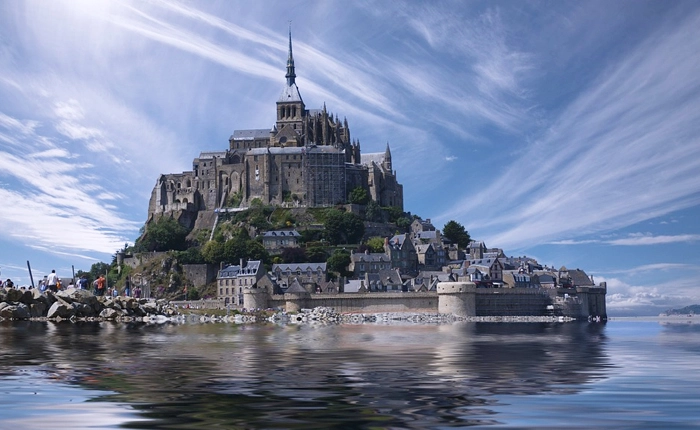
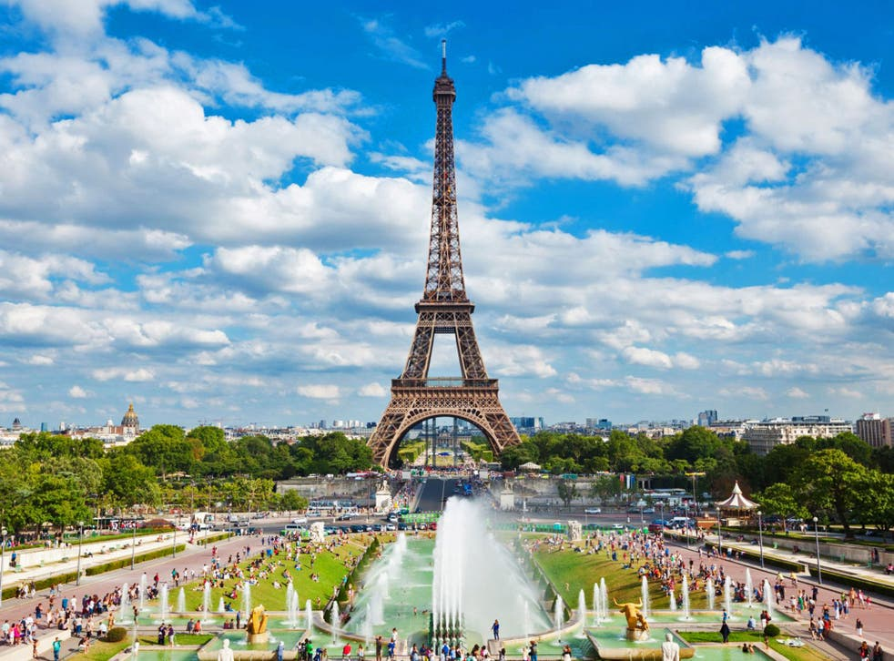

The Wonder of the West

Le Mont Saint-Michel is a rocky island that soars up in a grand bay between Brittany and Normandy; on a misty morning,
the island seems to appear in the sky itself. Benedictine monks settled here in the 10th century; over time, an abbey, church,
fortifications, and a village were all built. It was used as a prison during the French Revolution but today is home once more
to a religious community.ou can reach the island through a causeway.
Even though the tides in the bay are among the highest recorded in Europe, you can always walk across to
the UNESCO World Heritage ‘Wonder of the West’.
Notre Dame de Cathradal

While its interior is closed off to visitors following the devastating fire of April 2019,
this masterpiece of French Gothic architecture remains a must visit place in Paris. Over its long construction period
numerous architects worked on the site, as is evidenced by the differing styles at different heights of
the west front and towers. The Mémorial des Martyrs de la Déportation is just behind it, don’t miss it either
Eiffiel Tower

Time for a big classic. Despite being such a cliché, this spot is one of our favourites of the list as a tourist. It was
built in 1889 as the entrance arch to the 1889 World’s Fair, which was located in the nearby Trocadéro area. It is 324 metres
(1,063 ft) tall and, at the time of its completion, the tallest man-made structure in the world – a title it held for 41 years.
This monument represents the aspirations of a country and thetechnical skills of its creators, which I
find inspiring. In addition, the atmosphere around the Eiffel Tower is magical.